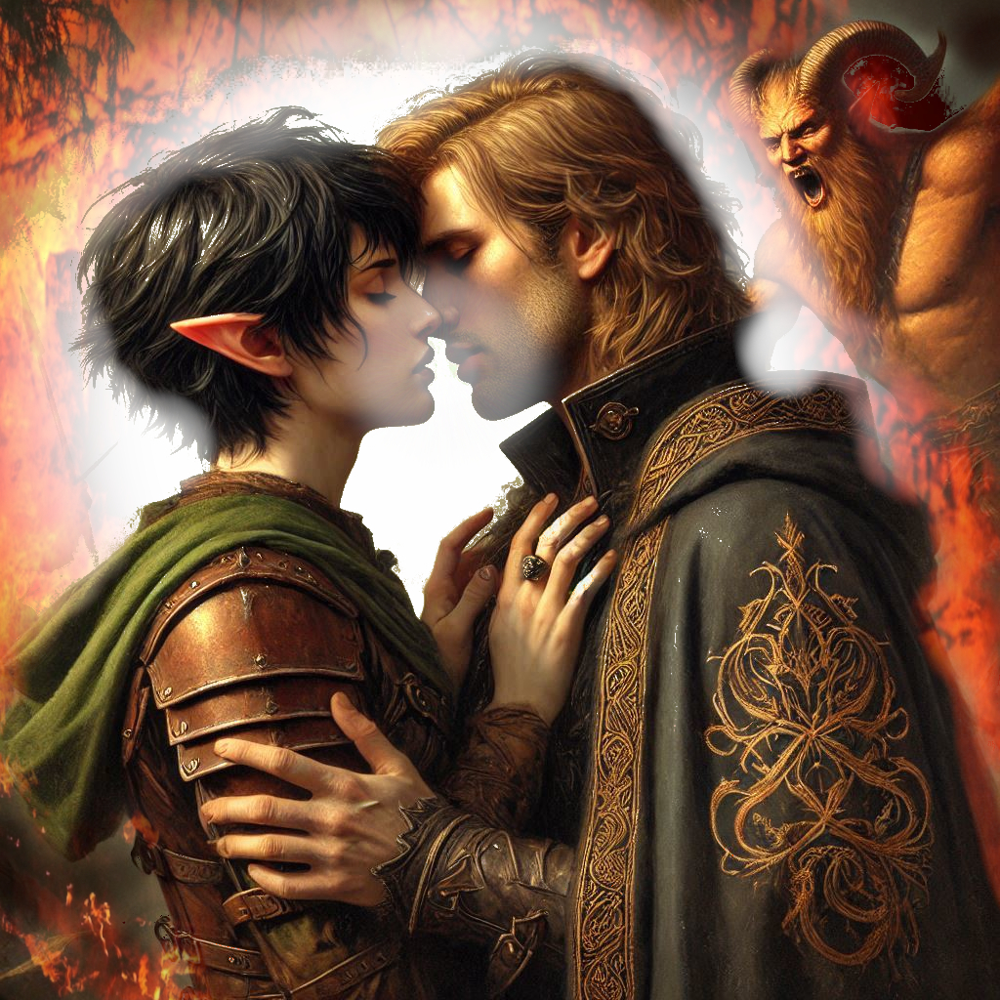

Love Conquers All
You stand before Jorsh in the dim light of the cavern, his face softened with relief as he pulls you into a tight embrace. His warmth surrounds you, a sense of comfort you’ve longed for but never dared to imagine finding again. His whispered words echo in your mind: "Together, we can stop Varis… we can stop Yaldaboath."
Your heart pounds. The weight of everything—your duty, your feelings, the love you still harbor for Jorsh—presses down on you. The mere mention of Yaldaboath sends a chill down your spine, a dread you can’t quite suppress. The demon is beyond anything you’ve ever faced, and yet, with Jorsh at your side, you dare to believe that perhaps you can do the impossible.
"We can defeat him," Jorsh continues, his fingers lacing with yours, grounding you in his certainty. "Not even Varis knows the full extent of Yaldaboath's power. But I’ve studied it. I’ve found a way."
You hesitate for only a moment. You could go after Varis, confront the dark elf who has been pulling the strings of chaos in the kingdom, but Jorsh's plan makes a dark, thrilling sense. If you go directly to Yaldaboath, stop him before Varis can unleash the demon’s full power… it could change everything. Maybe it could save the Kingdom of Yew from the shadows forever.
"I’ll go with you," you say at last, your voice steady despite the tremor in your chest. Jorsh’s eyes light up with hope and determination. He wastes no time, clasping your hand tightly and pulling you toward the portal embedded deep in the cave’s stone floor. As he speaks the incantation, you feel the energy shift around you, a dark and terrible magic rising from the depths. The ground shudders, and the swirling portal blazes to life.
"Stay close," Jorsh whispers, though you know you wouldn’t dare stray from him now.
The world blurs in a rush of dark energy as the portal engulfs you both. For a moment, there is nothing but darkness—an abyssal weight pressing against your chest, making it hard to breathe. You feel Jorsh’s grip tighten on your hand, and suddenly, the world shifts.
You’re no longer in the caverns. You stand in the vast and decayed temple of Umbra'Thal, the Realm of Shadows spread before you like a nightmare made real. The air is thick, heavy with the stench of decay and the palpable presence of malevolent magic. The walls of the temple stretch into the gloom, lined with grotesque statues of ancient demons. The portal behind you seals shut, trapping you in the realm of Yaldaboath.
Jorsh moves with purpose, leading you deeper into the temple’s heart. His expression is hard, determined. "This is it, Kira. We have to act fast. If Yaldaboath senses we’re here, there’ll be no turning back."
You swallow hard, nodding. The enormity of what you’ve agreed to do presses down on you. As you move through the crumbling stone hallways, the eerie silence only heightens your tension. Each step feels heavier, as if the shadows themselves are watching, waiting.
Finally, you reach the central chamber—a vast, open space bathed in an unnatural, flickering light. At the center of the room stands a towering altar, and above it, a swirling vortex of black smoke and crackling energy. Your breath catches as you feel the sheer power of the being that lies beyond the vortex.
Yaldaboath.
Jorsh raises his hand, a shimmering magical rune forming in the air. "This is it. Once I summon him, we fight with everything we have. We can’t let him escape."
Before you can respond, Jorsh begins the incantation. His voice rises, the rune expanding, and the vortex above the altar begins to spin faster, the darkness within roiling like a storm. The ground beneath you trembles violently as the air grows thick with the scent of sulfur and ash. Then, with a deafening roar, the demon emerges.
Yaldaboath’s form is monstrous—an enormous shadow, his body twisting and shifting like smoke, with eyes like molten fire that burn into your soul. His presence is overwhelming, a force of pure destruction. The moment he appears, the very air around you seems to vibrate with the weight of his power.
Jorsh steps forward, casting spells as fast as he can utter them, sending bolts of arcane energy crashing into the demon. But Yaldaboath is unfazed. With a sweep of his massive clawed hand, Jorsh is thrown back, slamming into the temple wall with a sickening thud.
"Jorsh!" you cry out, rushing to his side. Blood trickles from his mouth, and his breathing is labored. He’s hurt—badly. But even as he struggles to rise, he looks at you with fierce determination.
"We have to keep fighting," he gasps. "Together, we can still do this."
But in your heart, you know the truth. You see it in his eyes—the realization that he isn’t strong enough. Neither of you is. Not alone. Not without something more.
A sudden clarity floods your mind. Jorsh’s words from earlier echo in your head: "Only our love can amplify the power."
The only way to defeat Yaldaboath is to make the ultimate sacrifice.
You turn to face Yaldaboath. The demon advances, his glowing eyes locking onto you. But you’re not afraid anymore. In that moment, you realize what must be done.
Kneeling beside Jorsh, you wrap your arms around him, pulling him close. "I won’t let him take you," you whisper. Jorsh’s eyes widen in confusion and fear, but you press your lips to his in a kiss filled with every ounce of love and longing you’ve ever felt for him.
The world erupts in blinding light.
A surge of energy explodes from your embrace, a force so powerful it shakes the temple to its core. Yaldaboath howls in fury as the light consumes him, his form resisting for a moment before unraveling into nothingness. The darkness shatters, the vortex collapsing in on itself. The temple walls crumble, the ancient stone cracking and falling as the light continues to expand, banishing every shadow.
As the light fades, so do you and Jorsh, your bodies dissolving into brilliance. And yet, there is no pain—only warmth, only peace. Together, you’ve stopped the end of the world. Together, you’ve saved the kingdom of Yew.
Epilogue
Elias kneels in the ruins of the temple, fingers brushing over the last remnants of light. The air is still, the shadows gone. He closes his eyes, whispering a silent farewell.
In the distance, the first rays of dawn break through the clouds. And somewhere, carried on the wind, a voice lingers—soft, certain.
Love conquers all.